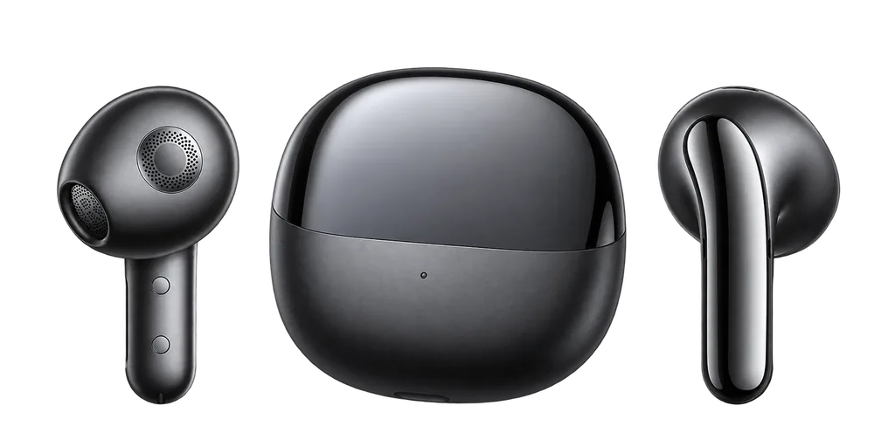

Три заряда
Левый наушник, кейс и правый наушник — в одном понятном порядке.
НЕОФИЦИАЛЬНОЕ ПРИЛОЖЕНИЕ ДЛЯ ANDROID
Компактная карточка для Xiaomi Buds 5 появляется поверх текущего экрана, когда оба наушника в открытом кейсе. Закрыл кейс или вынул наушник — она плавно уходит вниз.
Тестовая сборка из GitHub Releases. Установка и обновления подтверждаются средствами Android.

01 / НА ЭКРАНЕ
Проверь, как выглядит карточка в тёмной и светлой теме. Проценты в интерактивном макете — пример, на телефоне приложение показывает свежие данные Buds 5.
ИНТЕРАКТИВНЫЙ МАКЕТ
В приложении она появляется после подтверждённого Bluetooth-сигнала и исчезает при закрытии кейса или извлечении наушника.
На телефоне также есть режим «Как в системе».
02 / ВОЗМОЖНОСТИ
Левый наушник, кейс и правый наушник — в одном понятном порядке.
Карточка ждёт подтверждения обоих наушников в кейсе и не появляется снова при использовании одного.
Потяни карточку вниз: короткий жест возвращает её, длинный скрывает до нового открытия.
Светлая, тёмная или в тон системе. Выбор меняет и приложение, и карточку.
03 / ПЕРВЫЙ ЗАПУСК
Скачай установочный файл из Assets релиза и открой его на телефоне.
Разреши «Устройства поблизости» и показ поверх других приложений.
Выбери сопряжённые Buds 5, нажми «Запустить наблюдение» и открой кейс с двумя наушниками внутри.
04 / ВАЖНО ЗНАТЬ
Сигнал от левого и правого наушников может прийти в разных Bluetooth-пакетах. Приложение дожидается подтверждения обоих, чтобы не показывать карточку ошибочно при использовании одного наушника.
Сейчас проверены Xiaomi Buds 5 на POCO F7 с Android 16 / HyperOS 3. Поддержка других моделей не заявлена.
Настройки и журнал хранятся на телефоне. В приложении нет интернет-разрешения или аналитики. Подробнее о данных и разрешениях ↗
Наблюдение работает через foreground-службу. HyperOS может ограничивать фоновые процессы; при необходимости настрой автозапуск и ограничения батареи для приложения.
XIAOMI BUDS 5 / ANDROID